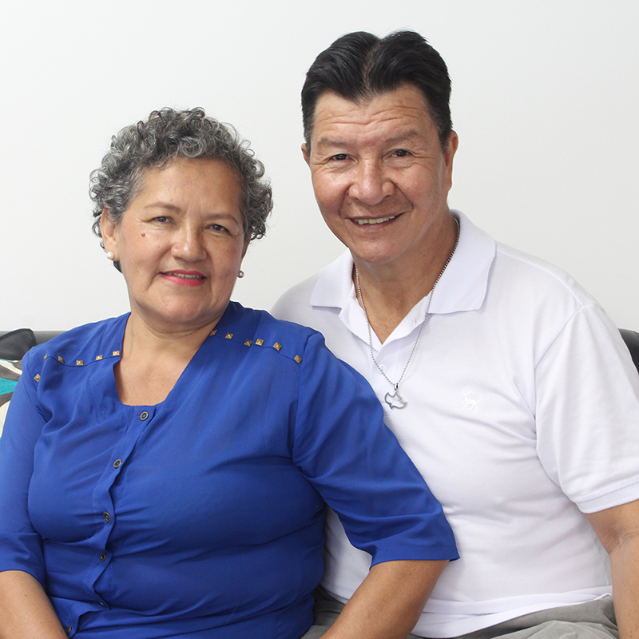
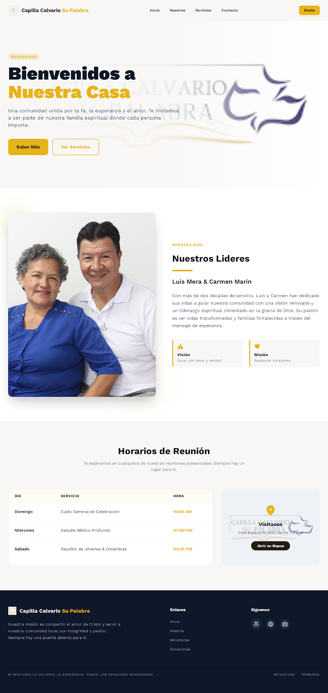

Bienvenidos
Bienvenidos a Nuestra Casa
Una comunidad unida por la fe, la esperanza y el amor. Te invitamos a ser parte de nuestra familia espiritual.

Nuestra Guía
Nuestros Líderes
Luis Mera & Carmen Marín
Con más de dos décadas de servicio, Luis y Carmen han dedicado sus vidas a guiar nuestra comunidad con una visión renovada y un liderazgo espiritual cimentado en la gracia de Dios.
Visión
Guiar con amor y verdad.
Misión
Restaurar corazones.
Horarios de Reunión
Te esperamos en cualquiera de nuestras reuniones presenciales. Siempre hay un lugar para ti.
| Día | Servicio | Hora |
|---|---|---|
| Domingo | Culto General de Celebración | 10:00 AM |
| Miércoles | Estudio Bíblico Profundo | 07:00 PM |
| Sábado | Reunión de Jóvenes & Dinámicas | 04:30 PM |
